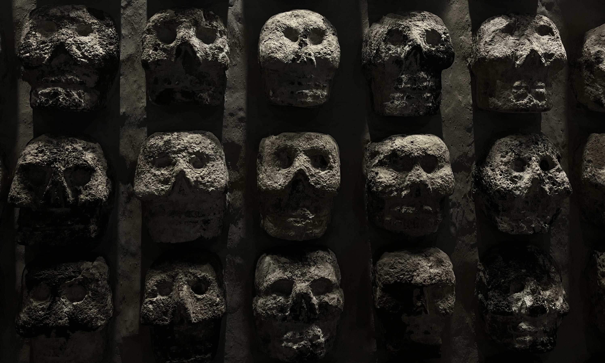

Visita nuestra exposicón de arte tradicional mexicano, disponible entre el 01 al 30 de abril, puedes ver una galería de las obras pinchando aquí.
Common People es un espacio vanguardista y acogedor dedicado a la exposición y promoción de artistas emergentes y desconocidos. Con paredes blancas impolutas y una iluminación que realza cada obra, esta galería se convierte en un santuario para la expresión artística sin filtros.
Al entrar, los visitantes son recibidos en una amplia sala principal, donde las obras de arte se exponen en una disposición no lineal, invitando a un recorrido orgánico y personal. Cada pieza, ya sea pintura, escultura o instalación multimedia, está acompañada de una pequeña placa que ofrece una breve historia del artista y su visión, proporcionando una conexión íntima entre el creador y el espectador.
La galería organiza eventos mensuales donde los artistas tienen la oportunidad de interactuar con el público, realizar talleres y charlas que fomentan la apreciación del arte y la comunidad artística. Common People no solo es un espacio para la exhibición, sino también un lugar de encuentro y crecimiento para aquellos que están dando sus primeros pasos en el mundo del arte.